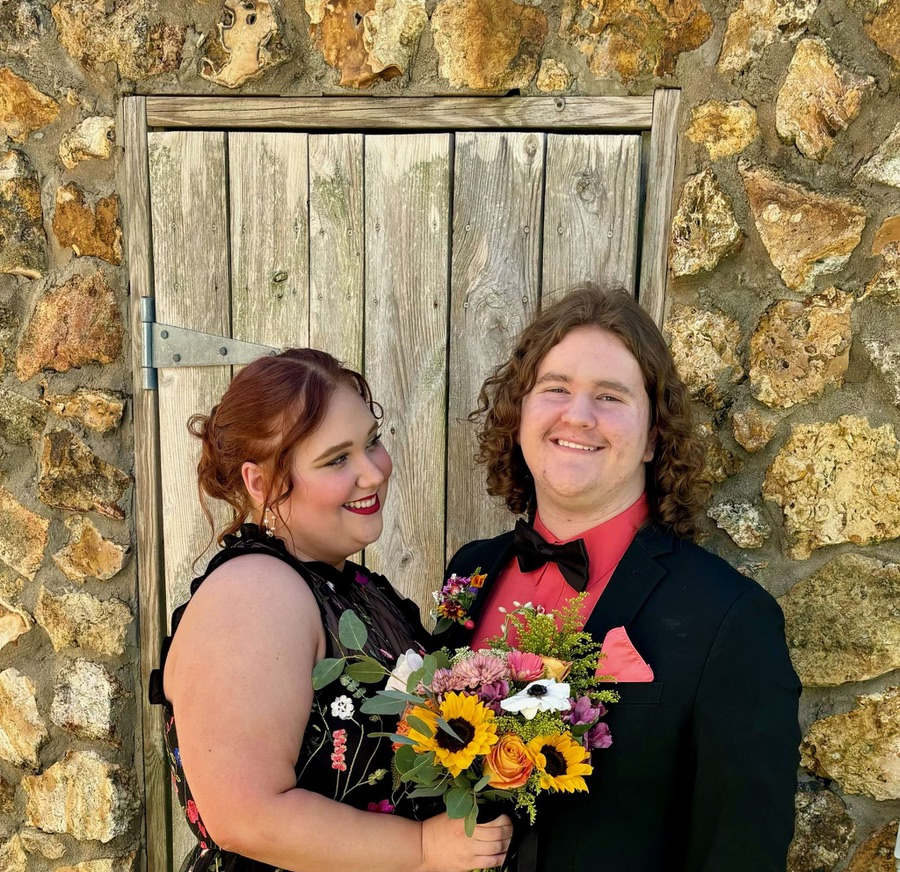

Nothing in this world makes me happier than to be able to spend even one minute in your presence. You are the most beautiful woman I have ever met and I can not express enough how lucky I am to call you mine. My heart melts everytime I see you and I still get those butterflies in my stomach when we kiss. I want to be with you through the good and especially through the bad. I want to be the one that takes care of you when your sick, I want to be able to take the day off work and make you chicken soup. I want to learn how to make your favorite type of pasta when you are hungry. You are the light of my life and I cherish you deeply with every ounce of my being. You are the first thing I think about when I wake up in the morning and the last thing I think about when I go to sleep at night. Nothing in this life makes me feel more joy than you. I can't believe how lucky I am genuinely, I am granted the privilege every day to be able to see your cute face and see your gorgeous smile. I will love you until the day that I die and I will never stop trying to show you how much I care about you and how much I love you.
This is one of my favorite pictures of us. The way you look at me and have this look of love in your eyes makes me go crazy. I love when you look at me.
